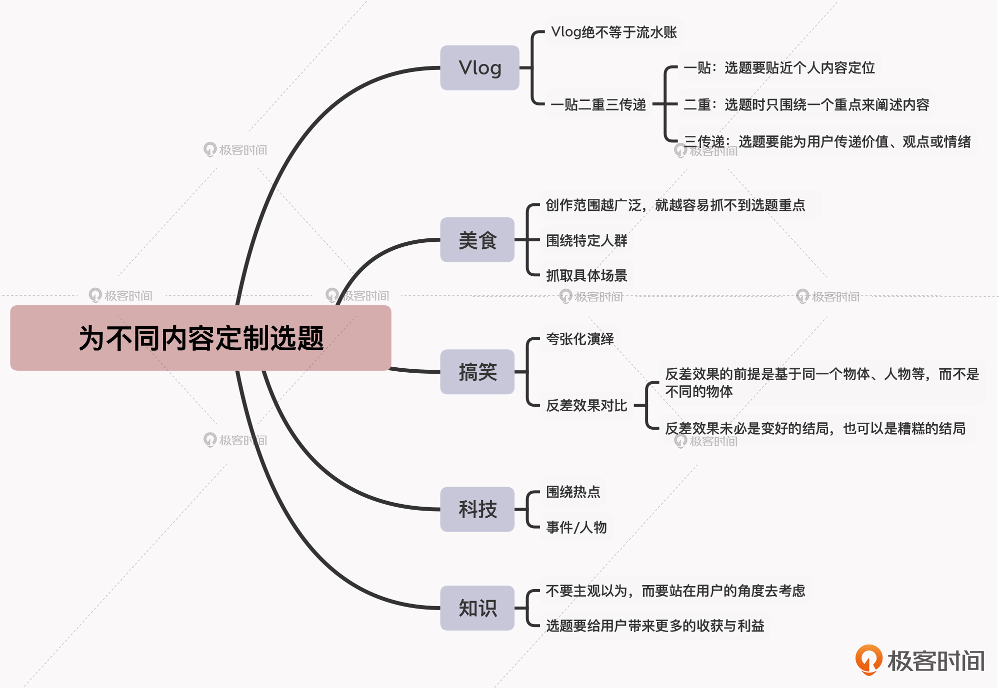

- 00 开篇词 短视频时代下，怎么把握好变现风口？.md.html
- 01 爆款短视频的底层逻辑：用心拍的短视频为啥没人看？.md.html
- 02 爆款短视频的底层逻辑：如何轻松打造自我特色？.md.html
- 03 精益创业法：如何快速跨过从0到1这道坎？.md.html
- 04 SWOT法：这么明显的个人优势你为啥就是看不到？.md.html
- 05 效用函数法：如何用量化的方式进行高效创作？.md.html
- 06 二次创新实验法：如何打造个人的差异化定位？.md.html
- 07 平台定位：如何选择最适合自己的创作平台？.md.html
- 08 如何快速找到各大短视频平台的正确切入点？.md.html
- 09 选题（上）：如何利用思考清单找到合适选题？.md.html
- 10 选题（下）：如何为不同的内容定制合适选题？.md.html
- 11 优劣分析法：如何快速筛选适合创作的视频素材？.md.html
- 12 标题（上）：如何利用微创新巧妙找到爆款标题？.md.html
- 13 标题（下）：如何用对号入座的方式抓住标题亮点？.md.html
- 14 视频封面（上）：如何快速抓住用户注意力？.md.html
- 15 视频封面（下）：如何传递最有价值的信息？.md.html
- 16 视频剪辑：如何轻松掌握视频化剪辑的三大公式？.md.html
- 17 效果反馈法：剪辑很容易，为什么你却一直学不会？.md.html
- 18 剪辑对比（上）：如何避开常见的短视频剪辑陷阱？.md.html
- 19 剪辑对比（下）：如何利用剪辑技巧提升视频质量？.md.html
- 20 拉片法：用电影创作的方式学习爆款短视频运营技巧.md.html
- 21 用户留存率：为什么粉丝很多但忠实拥趸却很少？.md.html
- 22 点赞率（上）：如何有效提升短视频的点赞量？.md.html
- 23 点赞率（下）：三种方法轻松提升用户对内容的认可度.md.html
- 24 上瘾机制：为什么视频观看量很高却没人留言？.md.html
- 25 避坑指南：为什么很多短视频账号中途做不下去了？.md.html
- 26 如何找到适合自己的短视频变现模式？.md.html
- 27 多元化变现：如何明确不同创作阶段的变现任务？.md.html
- 28 多内容变现：不同内容的主打变现模式是什么？.md.html
- 结束语 一切成大事者，都是终身学习者.md.html
- 捐赠
10 选题（下）：如何为不同的内容定制合适选题？
你好，我是周维。上节课我们是站在广度的视角上，通过思考清单的方式，学习了寻找短视频选题时的一些通用方法。这节课我们依然是来学习选题方法，不过我会从深度的视角出发，带你来探讨Vlog、美食、搞笑、科技、知识五种内容领域的选题方向，目的就是通过具体内容领域的选题方法，以更加精准、具象的方式，提高你在选题时的正确性。
这里我想先说明一下，之所以选择这五种内容领域，是因为围绕这五种内容类型的创作群体和目标受众覆盖范围最广，而且每类内容的选题方式各具特色，比较有针对性和代表性，能够让你清晰地感知和理解如何为不同的内容定制合适的选题。
好，下面我们就具体来看看吧。
Vlog
首先，我们来看一下Vlog创作领域。
现在，短视频的创作门槛越来越低，Vlog已经成为了当下最热门的短视频创作类型之一。通常我们对Vlog的认知，可能就是记录和分享自己的日常生活，哪怕是流水账式的絮絮叨叨。但是我们要知道，Vlog绝不等于流水账。
虽然在大多数情况下，这种内容类型不需要明确的创作脚本，但一个优秀的Vlog，仍然需要创作者构思相对新颖和独立的选题。
那么，具体要怎么做呢？我总结了一个实用的方法，即“一贴二重三传递”，下面我就结合案例，来给你介绍一下。
1. 一贴：选题要贴近个人内容定位。
在Vlog这个内容领域里，吸引用户持续关注的主要动力，其实就是你的人设，只有人设有意思，用户才会愿意去看你的日常生活。
所以，不管你是创作什么样的Vlog内容，在选题上一定要贴近你的个人定位，只有这样吸引到的用户才是你最需要的，也才能为你日后的变现提供价值。
我举个例子，在抖音上有个叫做“韩安娜呀”的Vlog创作者，她的内容定位是情侣间的唯美日常生活，很多用户在看过她那么多条视频之后，或许不会记得具体的内容是什么，但是依然会记得两个年轻人之间令人羡慕的小幸福，这就是贴近内容定位的好处。
2. 二重：选题时只围绕一个重点来阐述内容。
很多人可能都觉得，既然要贴近个人定位来拍Vlog，那只要是跟自己做的事情有关，就要一路拍下来。其实并不是这样的，虽然用户关注的是Vlog中的人物，但受限于视频时长，以及用户碎片化时间的观看习惯，如果Vlog里展现的内容太多太杂，反而会让内容不聚焦，使得用户失去观看兴趣。
所以说，在选题时，最好可以只体现一个重点、只讲一件事情，而不要采用多线叙事的方式。
我举个例子。
我之前做线下培训的时候，遇到过一个做三农内容类型的Vlog博主，他的个人定位是记录自己在农村的生活。
我看了一下他发布的几条Vlog，基本上都是以时间线来展开阐述内容的。所以在视频中，他一会儿是记录自己去农田劳动，一会儿又是去超市购物，然后又是去河里钓鱼等等，可这样就导致我的观看体验很不好。比如说，我刚要集中注意力看看他在超市里逛了什么、买了什么，下一秒就变成了他收拾东西准备去钓鱼，这样看下来，就会让用户的注意力很分散，往往就会失去看下去的耐心。
所以我给他的建议就是在选题时，每次只抓住一个重点来阐述内容，不要“眉毛、胡子一把抓”。后来，他告诉我自己的视频观看量渐渐上来了。
3. 三传递：选题要能为用户传递价值、观点或情绪。
Vlog看似是个人日常的记录与分享，但本质上还是一种为用户传递价值和干货的短视频内容。所以我们在选题上依然不能脱离用户，一定要能给用户提供价值，而最好的方式就是通过自己的视角来解读看到的人与事。
我给你举个例子。央视新闻有一名记者叫王冰冰，前段时间因为独特的主持气质被大众所认知。后来她也被B站邀请入驻，主要是拍摄一些Vlog视频来展现自己甜美、谈吐幽默的人设。
比如说这期内容，就记录了王冰冰参加央视晚会的台前幕后，让我们看到了在荧幕上新闻记者的另一面。其实在观看过程中，你可以发现不管王冰冰记录的是什么样的日常，都会向用户传递一种正能量，或者是给到一些实用的价值，所以很多粉丝都说看她的Vlog有一种“治愈的感觉”。
好了，这就是在Vlog创作领域中确定选题时可以应用的三个方法了。
但是这里还有一个需要注意的地方，就是一定不能选择平台限制的选题内容，或者是打擦边球、涉及敏感话题的Vlog选题，哪怕是符合“一贴二重三传递”的选题原则，不然这种选题做出来的后果就是会遭到平台警告、作品下架、账号封禁。
那么要如何得知这些平台禁忌的选题内容呢？有两个途径给你分享一下：一个是每个短视频平台的用户协议中，都会详细注明敏感词和禁忌点，有些平台还会制作相关的视频内容告知创作者；二个是及时关注平台官方发布的动态消息，因为平台会不定期总结一些不允许发布的选题方向提供给创作者。
美食
说完Vlog的选题方法，我们接着来学习下在美食这个内容领域中，具体要怎么寻找合适的选题。
我在第1讲就提到过，“吃”是马斯洛需求层次理论中最底层的需求。如此一来，可能有些人就会觉得，只要在选题上，能够围绕用户爱吃、想吃、喜欢吃的食物进行多元化的价值输出，就没有问题了。
确实如此，毕竟与美食相关的内容类型比较多，能够涵盖各种菜系、需求场景和对应的目标受众，满足不同创作者的选题需要。
但这里的问题就在于，创作范围越广泛，其实就越容易抓不到选题重点。因此，在寻找美食领域的内容选题时，我们可以遵循两个方法。
第一个方法是围绕特定人群，也就是站在具体的用户受众背后去寻找合适的选题，创作他们喜爱的美食内容，以此吸引这一类用户群体的注意力，从而达成让自己的作品成为爆款的目的。
我给你举个例子。有一个名为“小陈爱美食”的创作者，他的内容都是以美食教程为主，但是每一次的选题都是以特定人群的需求为重点。比如，有一期内容是创作芒果和牛奶搭配的水果布丁，主要针对的是儿童群体，这期视频点赞量达到58万，分享量也有4万多；他针对年轻人喜欢的零食教程的视频，点赞量也达到了227万之多。
第二个方法是抓取具体场景，也就是要在具体的场景下，给用户提供具体的解决方案。比如，我之前看过一个专门创作与婚宴有关的美食创作者。婚宴是一个特殊的场景，在这个场景之下，如何创作出适合的美食，就是用户很期待的内容。
也就是说，当我们在找选题时，具体场景一定是在一个特定的空间环境下、有特定的人群需求，然后帮助他们解决了问题。
搞笑
其实，搞笑或幽默算是一种创作上的特色，它在各种内容领域中都适用。比如在知识领域中，每一次都是以幽默的方式传递了一个价值，也可以理解为属于搞笑领域。不过这里，我们就只针对狭义上的搞笑内容领域，即以喜剧、幽默的故事为主打的内容选题。
对于搞笑领域的创作，大多创作者觉得最好的选题，就是能找到一些好的段子，来达到让用户看了之后能够开心的目的即可。
但是，想要真正达到这个目的其实并不容易。在我看来，对于搞笑领域的创作者来说，想要找到好的选题就不能简单地模仿，而是要找到选题中最搞笑的部分，进行故事化的演绎。所以在选题上，就集中表现在夸张化演绎、反差效果的对比。
具体是什么意思呢？所谓的夸张式演绎，是说当你寻找到一些选题之后，你首先要想到，这个内容是否可以通过夸张式的方式演绎出来，并且用户看了之后不会有违和感。
那你肯定要问了：我认识夸张两个字，但是怎么算夸张式演绎呢？
我给你举个例子。
比如，有一个人驾车行驶在一条小道上，前面正好有一块小石头横在路的中央。司机看到之后，从车内下来，思索了一下，从车内拿了一把尺子，量了一下小石头的高度，又量了一下自己车的底盘高度，看到汽车的底盘高度大于小石头的高度，然后很开心地直接驾车从小石头上过去了。
这其实就是一种非常夸张的演绎，毕竟现实中正常的做法是直接将石头搬开，而不是费尽周折去量石头与汽车底盘的高度，但是这种夸张的演绎也是解决问题的一种方法，你在感觉到开心的同时也不会觉得有违和感。
而反差效果就比较容易理解了，就是说前后的对比很明显，用户看了之后能感受到强烈的视觉冲击感。
这种选题集中表现在一些美妆、特效等内容类型上，通过前后强烈的对比效果，让人产生出其不意的感觉，从而达到吸引用户注意力的目的。
请注意，这里我要敲黑板了。当你根据“反差效果”来找选题时，一定要注意两点：
- 反差效果的前提是基于同一个物体、人物等，而不是不同的物体上。比如，你的选题是准备讲述化妆与不化妆的差别，但主要内容说的是张三与李四在化妆与不化妆上的对比，虽然有一定的反差效果，但是不够强烈，最好是一个人前后的对比更加直接。
- 反差效果未必是会变好的结局，也可以是糟糕的结局。因为只有这样才会产生戏剧冲突，达到出乎用户意料的目的。
科技
首先我们要明白一点，只要是跟科技领域相关的内容，比如涉及到技术、产品、运营等方面的内容，都可以归结为科技领域。科技领域对外表达的方式也会有很多，比如测评各类产品、分享科技观点、传递科技类的相关知识，等等。
对于科技领域而言，在找选题时一般都是围绕热点来展开的。而这里的热点，我们可以分事件或者人物作为切入点。
具体是什么意思呢？下面我们来看看。
事件：即具备5W1H原则的热点事件。也就是选题中的事件一定要是最近有热度的事情，并且是一个包含了时间、地点、人物、起因、经过、结局的完整事件。当然你在创作内容时，可以根据实际情况只展现其中一部分，但是你去判断一个事件的时候，最好采用这个方法。
人物：这里说的人物不是普通人，而是具有热点的人物，TA具有广大的知名度，而且频频公开亮相，是一个偏向社会属性的公众人物，而非政府相关人员，这一点非常重要。
知识
最后，我们再来看下知识领域要如何选择合适的内容选题。
首先要知道，只要是对外传递价值的内容，都可以归到知识领域当中。在围绕知识领域来选择选题时，我认为最大的难点就是不要总以为自己觉得内容合适，而要站在用户的角度去考虑，毕竟只有创作用户喜欢的内容才是正确的，在选题方面同样也是如此。
那么，怎样才算真正站在用户的角度去选择选题呢？
其实在知识领域中，合适的选题有一个判断标准，就是这个选题是否可以给用户带来更多的收获与利益。因为知识类短视频本质上就是一种价值输出，如果选题的背后无法带给用户某方面的收获，或者带来一些实惠的东西，那么这个选题就是没有意义的。
给你举个例子。
我有一个做K12教育相关的知识类内容创作的朋友，按理说，在找这类垂直领域的内容选题时，就是要重点帮助用户解决实际的问题。而我的朋友在刚开始创作时，忽略了这一点，总是会选择一些孩子们在成长时应该多注意的价值观、理念方面的选题。
当然，这本身没有错，但这样的选题其实很抽象，给用户带来的价值获得感就会很弱。而如果选择类似“不同学习阶段的孩子所面临的学习问题是什么”这样的选题，告诉用户具体要如何去解决，就会使得传递的价值感更加具体和直观。
小结
要想为不同的内容定制合适的选题，前提都是要站在不同创作形态的内容角度上，去识别出适合这些不同内容的合适选题。这些合适选题的背后有一些不同的选用标准与方法，而正因为有了这些差异化的存在，才有了不同内容的多样化。
要注意的是，当你在找选题时，不要被所谓的热点迷惑，而是一定要结合内容的独特属性，以及具体受众在这个内容领域下的强需求。

思考题
请你结合今天学习的内容，思考一下应该如何寻找适合自身内容领域的选题？欢迎在留言区分享你的思考过程。如果这节课所讲的内容没有涉及到你的创作领域，也欢迎你在留言区谈谈自己的创作感受或者疑问，我们一起交流讨论。
如果你觉得有收获，也欢迎把今天的内容分享给同样爱学习的朋友们。感谢你的阅读，我们下节课再见吧！
© 2019 - 2023 Liangliang Lee. Powered by gin and hexo-theme-book.